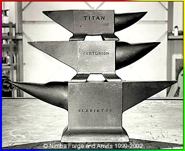

(Image used with permission of Nimba Forge and Anvil)
Three Nimba Anvils
|
When it comes to anvils, both old and new, there can be a
wide range of quality. The Nimbas shown above are modern highest quality state of the art steel anvils.
On the other end (low end) of the scale are some modern Chinese cast iron anvils that are very brittle and
even dangerous. See a example how a cast iron anvil can chip. Old-time anvils also vary in quality. Some were cast steel, some cast iron with a welded steel face, and others were cast iron with a tempered face. As with all used anvils, condition is a consideration. The London style (and English made) anvils were very popular with both American and British blacksmiths. Even today, the Peter Wright anvils are sought after, especially if they are in good shape. |
{kind=link}
Steel Face | ||||||
| Acme | 1910s | Sold by Sears, Roebuck | ||||
| Ajax | ||||||
| Alsop | ||||||
| American-Ross | ||||||
| American Skein & Foundry | ||||||
| AP Ranger | Current | Horseshoers Anvils | ||||
| Armitage Eagle | ||||||
| Arm and Hammer | ||||||
| Arthur Cottam Horseshoe Co. | Chesterfield , Derbyshire, England | Current | Hardened Steel | Horseshoers Anvil | ||
| Badger | ||||||
| Baker | ||||||
| Bay State | ||||||
| Black Jack | ||||||
| Black Prince | ||||||
| Bradley | ||||||
| Brooks and Cooper | ||||||
| Buffalo Forge | ||||||
| Champion | ||||||
| Charles Hadfield | ||||||
| Cliff Carrol | Current | X | Horseshoers Anvils | |||
| Columbus Anvil & Forging | Columbus, OH | 1910-20s | ||||
| Columbian Harden Co | ||||||
| Columbian Vise Co. | Cleveland, OH | |||||
| Columbus Forge & Iron | ||||||
| Cranberry | ||||||
| CW | ||||||
| Delta Future | Current | Steel top | Aluminum base | |||
| Denver | ||||||
| Dural | ||||||
| DuraSteel | ||||||
| Eagle Anvil Works | Trenton, NJ | Steel face | Was Fisher-Norris | |||
| Emerson | Current | |||||
| Fireside | ||||||
| Fisher-Norris | 1843 | First US made anvil | ||||
| Fulton | ||||||
| Habermann Type Anvil | Czech Republic | |||||
| Hay Budden | Brooklyn, NY | |||||
| Henry Wright | England | 1880s-ca1914 | ||||
| Herculies | ||||||
| Indian Chief | ||||||
| Insonora | ||||||
| J.E. Pilcher | ||||||
| JHM Anvils | Texas | Current | ||||
| Keen Kutter | ||||||
| KL | ||||||
| Kohlswa Gjuteri AB | Sweden | Current | ||||
| Lakeside | ||||||
| Liedecker Tool Co. | Marietta, OH | Bridge Anvils | ||||
| Louisville Forged Anvil | ||||||
| Mankel | Current | Cast Steel | ||||
| Mouse Hole | Sheffield, England | |||||
| NC Tool Company | Pleasant Garden, NC | Current | Horseshoers Anvils | |||
| Nimba Forge & Anvils | Port Townsend, WA | Current | 8640 alloy steel | Italian Renaissance Style | ||
| Oak Leaf | ||||||
| O’Dwyer | Australia | Current | Malleable iron | |||
| Old Forge | ||||||
| Onsteel | ||||||
| Paragon | ||||||
| Peddinghaus | Germany | Current | ||||
| Peter Wright | England | 1850s-1920s | London Style | |||
| Record | ||||||
| Refflinghaus | Germany | Current | Cast Steel | |||
| R. Redding | ||||||
| Rock Island | ||||||
| Roberts Anvil | ||||||
| Sampson | ||||||
| Sligo | ||||||
| Snyder & Oaks | ||||||
| Soderfors | Sweden | ca1200 AD on > | ||||
| Southern Crescent | ||||||
| Standard | ||||||
| Star | ||||||
| Trenton | ||||||
| Trenton Indian Chief | ||||||
| Valley | Current | |||||
| Vaughan/Brooks | England | Recent | Cast Steel | Double Bick | ||
| Vernaium Steel | ||||||
| Village Forge | ||||||
| Vulcan Arm-Hammer | Cast iron | Charcoal iron body Tool steel face | ||||
| West | ||||||
| Western Saw | Current | Saw makers’ anvils | ||||
| Wilkinson | Dudley England | |||||
| William Foster | ||||||
| Yost ("Y" in circle) |
{kind=link}
|
Credits: The basis of this list is a compliation of old time anvil makers which was complied by David Poppke and presented online by David W. Wilson and the North Texas Blacksmiths Association. To that list, we are adding current anvil manufactures and some old ones too - as we find them. |